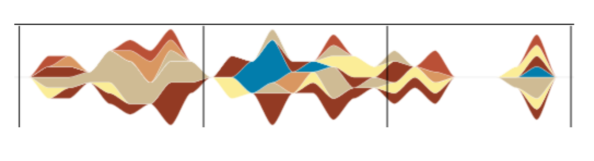
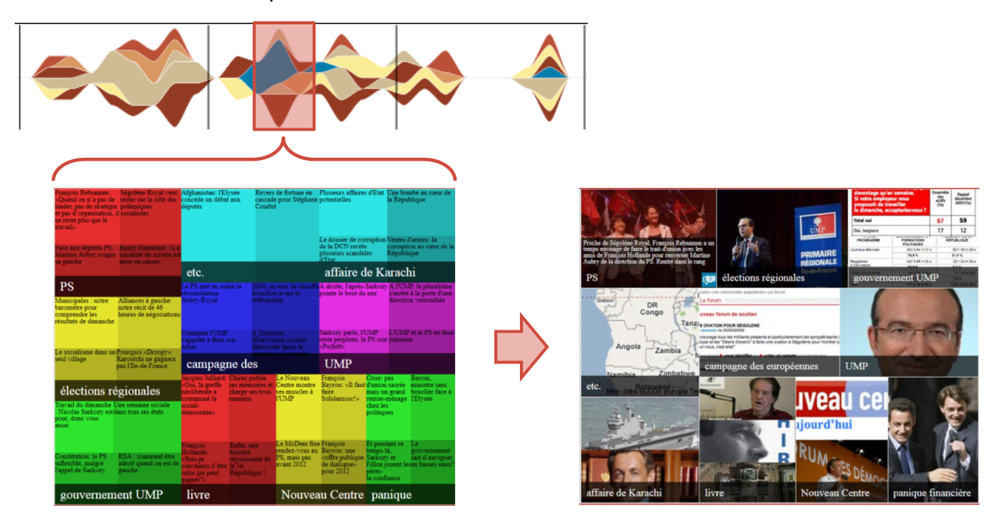

Machine Learning Meetup
Hors-Série #1: Data-journalisme
Machine Learning
Kesako ?
- Discipline qui traite de systèmes capables d'apprendre à partir de données
- Plus précisément, il s'agit de logiciels qui:
- pour réaliser une tâche donnée
- analysent l'expérience passée
- de manière à devenir plus performants dans le temps (avec de plus en plus de données)
Exemples classiques
- Classification de mails en SPAM/HAM
- Reconnaissance d'images (adresses manuscrites, chiens/chats, etc.)
- Prédiction de comportements utilisateurs, de résultats électoraux, ...
Le Machine Learning est ...
- Fortement liée à la statistique (buzzword: Data Science)
- Fortement liée à l'intelligence artificielle
- Très pertinente aujourd'hui
(beaucoup de données, CPU-power pas cher)
Data-journalisme
Kesako ?
Selon Wikipédia:
Le journalisme de données (data journalism en anglais) [...] est un mouvement visant à renouveler le journalisme par l'exploitation et la mise à la disposition du public de données statistiques
Le "Manifeste" du datajournalisme (2006):
A fundamental way newspaper sites need to change
A quoi sert le data-journalisme ?
- Augmentation du domaine journalistique aux données brutes
- Introduire une certaine scientificité dans les traitements journalistiques des données
- Mise à disposition des données utilisées au grand public
- Proposer une meilleure compréhesion des données et du monde via des visualisations novatrices (buzzword: dataviz)
Présentations
- What is a computational biologist doing at the New York Times?
Chris Wiggins, Chief Data Scientist au New York Times
- Articuler éditorialisation algorithmique et humaine
Nicolas Sauret (Centre Pompidou), Bertrand Delezoide (CEA)
- Dataveyes: Human data interactions
François-Xavier Fringant, co-fondateur
- Syllabs: Analyse sémantique & création de contenus textuels
Claude de Loupy, co-fondateur
What is a computational biologist doing at the New York Times ?
and what can academia do for a 163-year old company?
Chris Wiggins, Chief Data Scientist au New York Times
Chris Wiggins (@chriswiggins)
- Chercheur universitaire dans le domaine de la bioinformatique
- Mène de nombreuses initiatives d'utilisation de données disponibles publiquement
- Embauché récemment par le NYT pour mener une équipe de 5 Data Scientists
Pourquoi de la Data Science au NYT ?
- Rendre accessibles et compréhensibles les données produites par le NYT
- Extraire de la connaissance de ces données, scientifiquement
- Promovoir des critères de décision quantifiables, plutôt que basés sur l'intuition
Le but: Listen to its readers at web scale
What we're aiming to do is to try to inform product and marketing decisions, as well as potentially newsroom decisions.
Les pré-requis de la data science
- Pratiques scientifiques: méthodes, outils mathématiques, etc
- Compétences techniques: engineering before science
- Culture: promouvoir les concepts, les méthodes et le scepticisme propre à la science
Datamining et Dataviz chez Médiapart
Nicolas Sauret (Centre Pompidou), Bertrand Delezoide (CEA)
Periplus
Articuler éditorialisation algorithmique et humaine
- Project INR (24 mois) de valorisation des archives de Médiapart
- Extraction de données à partir de documents multimédias (non-structurés)
- Clustering automatisé des archives multimédias
- Indexation, synthèse de contenus multimédias
Streamgraph
Visualiser le volume d’un cluster éditorial dans le temps

Treemap
Visualiser l'ensemble des clusters à un instant t

Dataveyes: présentation d'une start-up de dataviz
François-Xavier Fringant, co-fondateur
Actualité du jeu vidéo en temps réel
Coupe du monde 2014 : Visualisation du match France-Suisse en temps réel
Syllabs: Analyse sémantique & création de contenus textuels
Claude de Loupy, co-fondateur
SAAS: Semantic as a service
- Collecter - twitter, RSS, web mining
- Analyser - classification, structuration
- Générér - Production algorythmique de tests de qualité humaine
Exemples: e-tourisme
Génération de descriptions touristiques
L'hôtel Oceania vous accueille dans son
établissement design 4 étoiles. Situé en plein cœur de
Paris, cet hôtel se trouve à 200 m du parc des
expositions et à 3km de la gare. L'hôtel, récemment
rénové, est décoré avec goût et bénéficie d'une
décoration contemporaine et moderne. Il a une
capacité de 250 chambres toutes confortables,
luxueuses, contemporaines avec une décoration haut
de gamme. Elles sont climatisées, insonorisées et
disposent toutes d'un balcon, idéal pour prendre l'air
ou pour observer la vue. Pour rester en contact avec
vos proches, un accès gratuit à internet est disponible.
Si vous avez plutôt besoin de vous dégourdir les
jambes, faites une petite balade dans le jardin de
l'hôtel qui recouvre une superficie de 700 m2. D'autres
possibilités vous sont aussi proposées.. [...]. Cet hôtel
est un excellent choix pour la clientèle business ou
bien pour les touristes. Pour vos déplacements, un
service de navette est proposé. Une navette peut
aussi vous déposer ou aller vous chercher à
l'aéroport.
Exemples: e-commerce
Génération de descriptions de produits
Le modèle décrit ici est un réfrigérateur NO FROST commercialisé par les équipes
Samsung. Ce réfrigérateur comporte un réfrigérateur et un congélateur. Pour aménager de
façon plus pratique, ce réfrigérateur est en Pose Libre. Pour une ambiance classique, ce
réfrigérateur blanc conviendra très bien. Le congélateur est à gauche. Le réfrigérateur utilise
425 kWh par an. Concernant la congélation, la capacité est de 12 kilos/jour. Ce réfrigérateur
dispose d'une contenance de 512L dont 158 litres alloués à la partie congélateur. Cet
appareil, de classe A+, consomme en moyenne 10% d'électricité en moins par rapport à
un appareil de classe A. De classe climatique SN-T, il doit être dans une pièce possédant
une fourchette de température allant de 10 à 43°C. Il dispose d'une autonomie de 12
heures pendant lesquelles vos aliments frais et surgelés seront conservés en toute sécurité.
Grâce à son distributeur automatique, vous pourrez vous désaltérer quand vous le souhaitez
! Ce réfrigérateur est large de 91.2 centimètres, haut de 178.9 centimètres et profond de
73.4 cm et son poids est de 116 kilos.
Autres applications
- Entreprises: Rapports financiers
- Médias: Fiches éditorialisés (Communes, Entreprises, Personnalités)
- Médias (cont.): Dépêches, Alertes, Mailings personnalisés
Le secteur
- Narrative Science - La référence en "Narrative Analytics"
- Quakebot - Alertes automatisées de tremblements de terre
- Wordsmith - Génération de rapports d'entreprise à partir de chiffres bruts
La désintox
OUI ! Les "robots" :
- Peuvent écrire des textes standardisés, de qualité HUMAINE
- Sont déjà en train d'éditorialiser des données brutes dans certains secteurs
La désintox
NON ! Les "robots" ne peuvent pas:
- Faire des analyses de discours politiques
- Faire du journalisme d'investigation
- Écrire des romans
Donc non, Skynet n'est pas prête de se réveiller ...